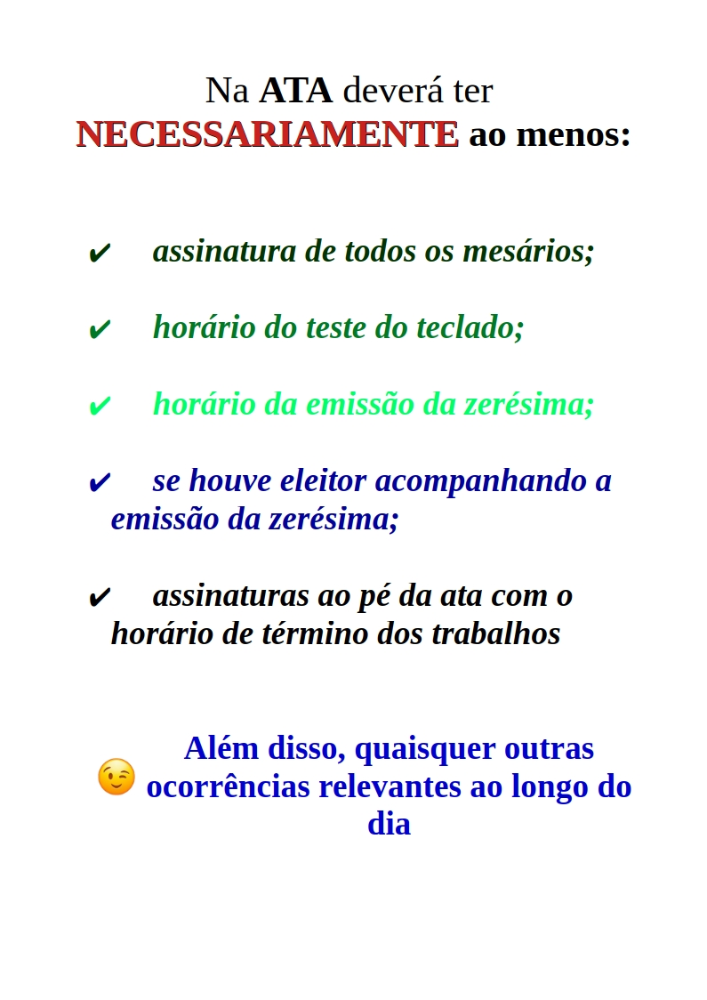

URNA
ELETRÔNICA
Clique para ver mais

Urna Eletrônica
Dispositivo usado no Brasil desde 1996 para registrar votos de forma eletrônica e segura.
CABINA DE
VOTAÇÃO
Clique para ver o vídeo
Cabina de Votação
ATA DE
SEÇÃO
O que deve constar

Ata de Seção
Documento oficial que registra tudo o que ocorreu na seção eleitoral. Deve conter:
- Horário de abertura e fechamento
- Ocorrências durante a votação
- Número de eleitores que votaram
- Justificativas e ausências
- Assinatura dos mesários
IMPEDIDOS
DE VOTAR
Quem não pode votar

SÁBADO
ATIVIDADES
Clique para ver

Sábado — Atividades
Principais atividades do sábado que antecede a eleição:
- Preparação das seções eleitorais
- Conferência de materiais e urnas
- Distribuição de urnas e cabinas
- Reunião com mesários
- Testes de funcionamento
DOMINGO
PRIMEIROS PASSOS
Na seção

Domingo — Primeiros Passos na Seção
Procedimentos iniciais no dia da eleição:
- Abertura da seção às 8h
- Conferência dos materiais
- Verificação da urna eletrônica
- Emissão da zerésima
- Início da votação
DOMINGO
FINALIZAÇÃO
Encerramento

Domingo — Finalização
Procedimentos ao encerrar a votação:
- Fechamento da seção às 17h
- Emissão do boletim de urna
- Conferência dos votos
- Lacre da urna
- Entrega dos materiais ao cartório
DTE
DECLARAÇÃO
Trabalhos Eleitorais

DTE — Declaração de Trabalhos Eleitorais
Documento que comprova a participação do mesário. Garante:
- Folga no trabalho (2 dias por dia trabalhado)
- Crédito em disciplinas
- Certificado de participação
- Prioridade em desempate em concursos